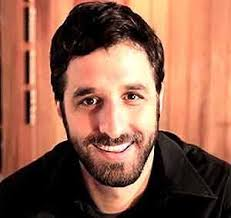

Atividade Prática - Currículo na Web

Identificação:
- Rafael Bastos Hoesman
- Data de Nascimento: 05/12/1976
- RG:819729873-010
- Endereço: Rua Guaxupé 34590 Apto 34
- Telefone: 011-94190217
- Email: rafaelhoes@bol.com.br
Apresentação
Considero-me uma pessoa muito sociável, constante e responsável.
Tenho disponibilidade total para o trabalho (até mesmo o manual).
- Bacharel em Jornalismo - PUC-RS
- Bachelor Degree in Communication: Chadron State College, NE (US)
- Programação em Basic: Data Control - 1991
- Inglês fluente: Diploma advanced 8 do Yázigi Escola de Idiomas
- Defesa Pessoal Avançada: Escola de Krav Magá Exodus - Canoas (RS)
- A Arte da Culinária Japonesa - Pratos Quentes: Senac (SP)
- Iluminação Residencial: Senastec (RS)
Experiência Profissional